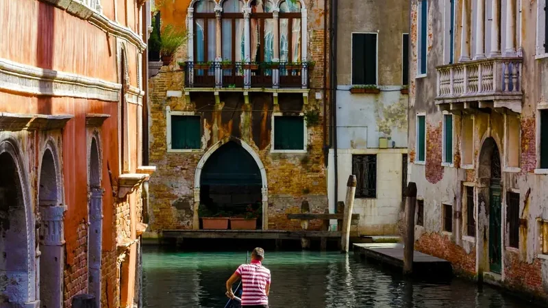
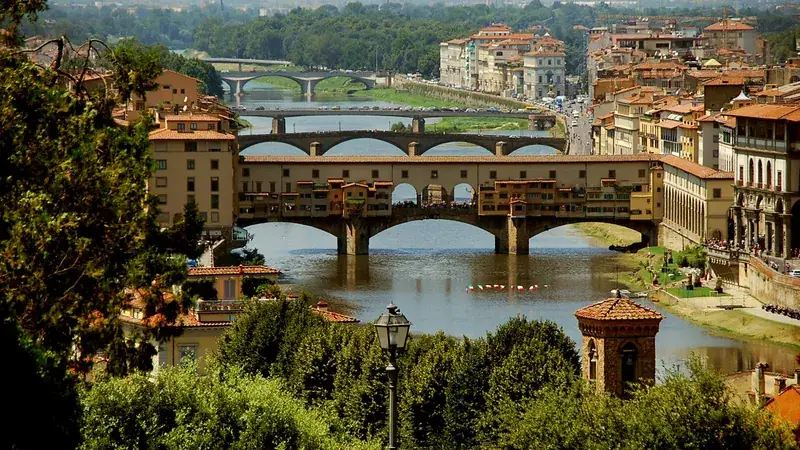

In breve
Sette giorni bastano per il classico trio italiano se dormi solo in tre posti e ti sposti in treno ad alta velocità: 3 notti a Roma, 2 a Firenze, 2 a Venezia. Atterra a Roma e riparti da Venezia (volo "open jaw"), così non devi mai tornare indietro.
Il programma di 7 giorni
| Giorno | Dove dormi | Cosa vedere |
|---|---|---|
| 1 | Roma | Arrivo, Pantheon, Fontana di Trevi, Piazza Navona |
| 2 | Roma | Colosseo, Foro Romano, Palatino, Trastevere |
| 3 | Roma | Musei Vaticani, Cappella Sistina, San Pietro |
| 4 | Firenze | Treno al mattino, Duomo, Ponte Vecchio, tramonto al Piazzale Michelangelo |
| 5 | Firenze | Uffizi, Galleria dell'Accademia (David), Oltrarno |
| 6 | Venezia | Treno per Venezia S. Lucia, Canal Grande in vaporetto, Rialto |
| 7 | Venezia / rientro | Piazza e Basilica di San Marco, Palazzo Ducale, volo di ritorno |
Giorni 1–3: Roma
Giorno 1 · Arrivo e centro a piedi
Da Fiumicino prendi il Leonardo Express o un taxi a tariffa fissa (vedi la guida Da Fiumicino a Roma). Dopo il check-in fai il giro facile Pantheon → Piazza Navona → Fontana di Trevi → Piazza di Spagna. Cena a Monti o in zona Campo de' Fiori.
Giorno 2 · La Roma antica
Comincia presto al Colosseo con un biglietto a orario prenotato prima; lo stesso biglietto vale per Foro Romano e Palatino. Riposo nel pomeriggio, poi attraversa il Tevere e passa la sera a Trastevere.
Giorno 3 · Città del Vaticano
Prenota online i Musei Vaticani per il primo mattino (la domenica sono quasi sempre chiusi). Chiudi con la Basilica di San Pietro: ingresso gratuito, ma spalle e ginocchia coperte. Se hai energie, sali sulla cupola.
Giorni 4–5: Firenze

Giorno 4 · Treno e Duomo
Prendi un Frecciarossa o un Italo al mattino da Roma Termini a Firenze Santa Maria Novella (circa 1h35). Lascia i bagagli in hotel, visita il Duomo e il Ponte Vecchio, poi guarda il tramonto dal Piazzale Michelangelo.
Giorno 5 · Uffizi e David
Prenota a orario la Galleria degli Uffizi e la Galleria dell'Accademia (il David di Michelangelo): il lunedì sono chiuse entrambe. La sera vai in Oltrarno, dall'altra parte del fiume.
Giorni 6–7: Venezia
Giorno 6 · Treno e Canal Grande
I treni veloci vanno da Firenze a Venezia Santa Lucia in circa 2h10. Controlla che il biglietto arrivi a Santa Lucia e non a Mestre (che è in terraferma). Dalla stazione prendi il vaporetto linea 1 lungo tutto il Canal Grande, scendi a Rialto e perditi tra le calli.
Giorno 7 · San Marco e partenza
Vai presto in Piazza San Marco, alla Basilica e al Palazzo Ducale. All'aeroporto Marco Polo si arriva in bus o in battello: tieniti molto margine.
Treni: come prenotare
- La tratta Roma → Firenze → Venezia è servita sia da Trenitalia (Frecciarossa) sia da Italo. Confronta entrambi: leggi Trenitalia o Italo.
- Prenota 2–4 settimane prima per i prezzi più bassi: vicino alla partenza salgono.
- I biglietti dell'alta velocità hanno posto e orario, quindi non vanno convalidati. Prima di partire controlla gli scioperi dei treni.
Consigli per far funzionare il viaggio
- Prenota prima le grandi attrazioni: Colosseo, Musei Vaticani, Uffizi, Accademia. Sono gli orari che finiscono per primi.
- Viaggia leggero: camminerai col bagaglio sui sampietrini e sui ponti di Venezia.
- Niente auto a noleggio su questa tratta: i centri hanno le ZTL e a Venezia non ci sono strade.
- Hai un giorno in più? Aggiungi le Cinque Terre tra Firenze e Venezia: vedi Cinque Terre in treno.
Pronto a prenotare?
Link affiliati: se prenoti, 687 può ricevere una commissione senza costi in più per te.
I tuoi 7 giorni, già organizzati.
In 687 Italy aggiungi Roma, Firenze e Venezia come tappe: ogni giorno ha Check trains e Naviga pronti, e quando arrivano uno sciopero, un ritardo o la pioggia NOW ricostruisce il resto della giornata attorno a ciò che è fisso, cioè i biglietti prenotati e il tuo treno.